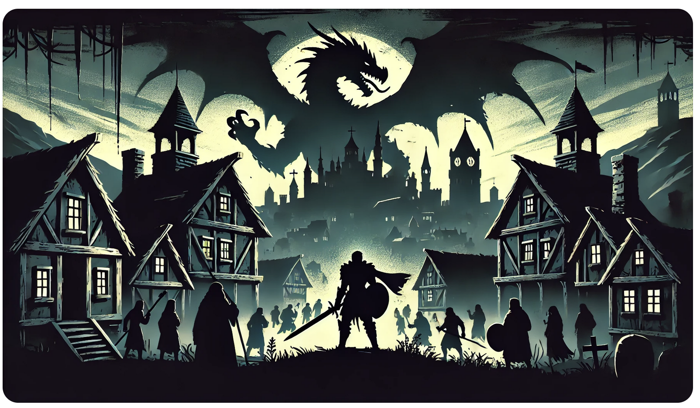
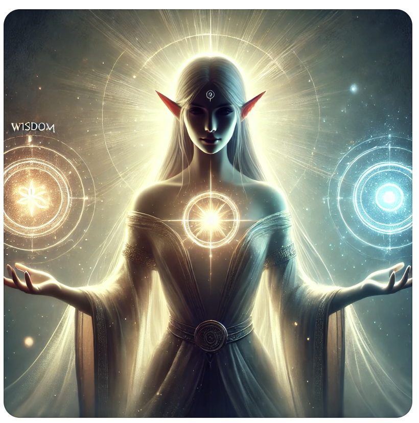
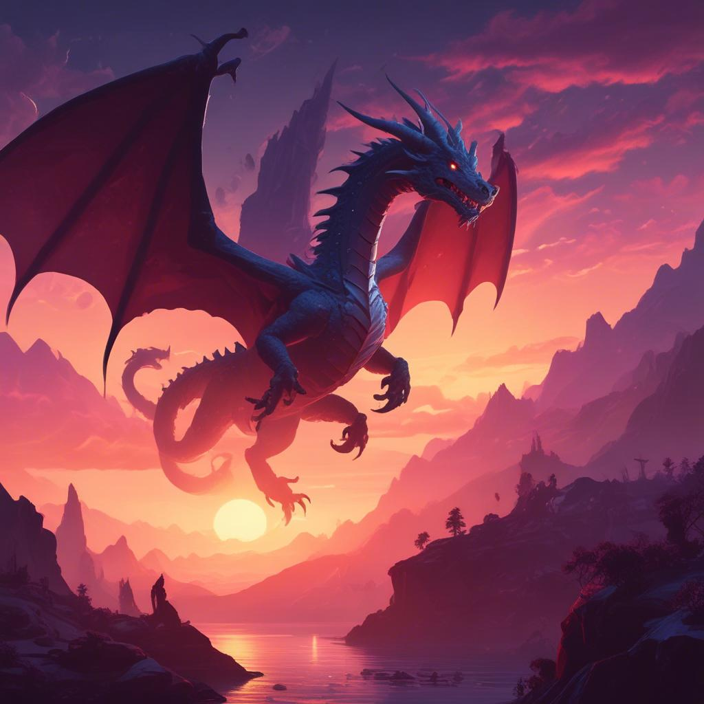
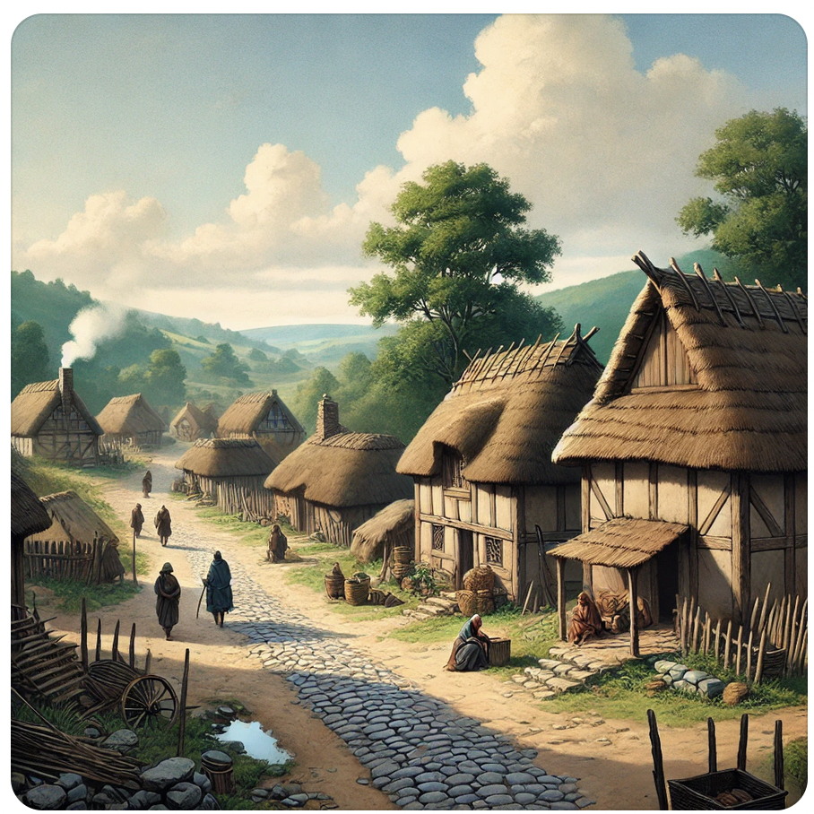
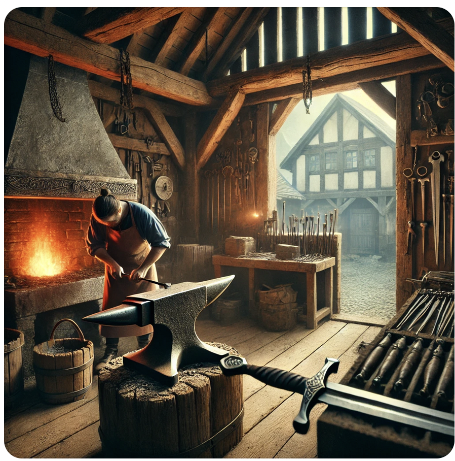
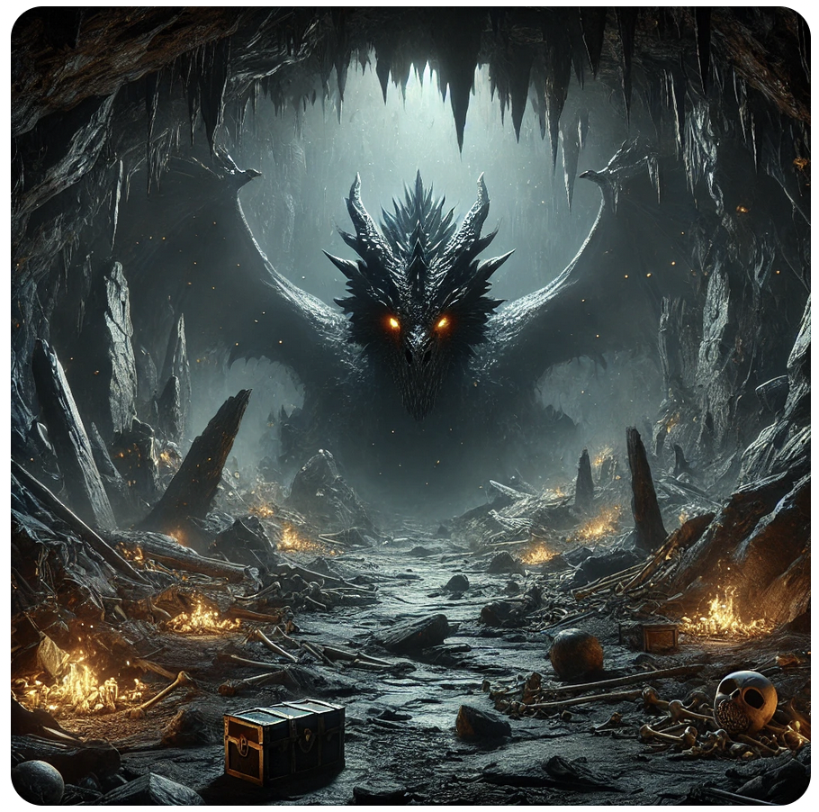
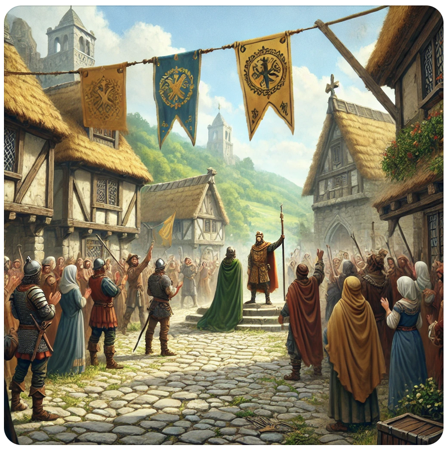
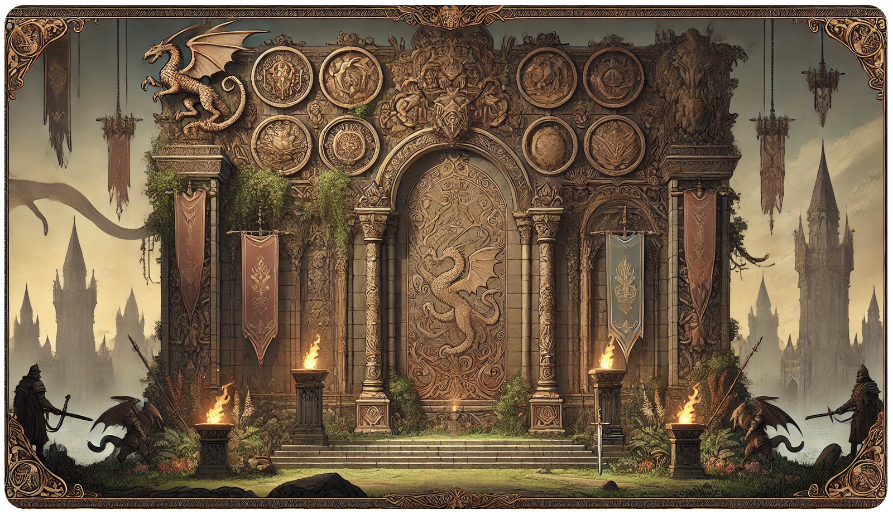
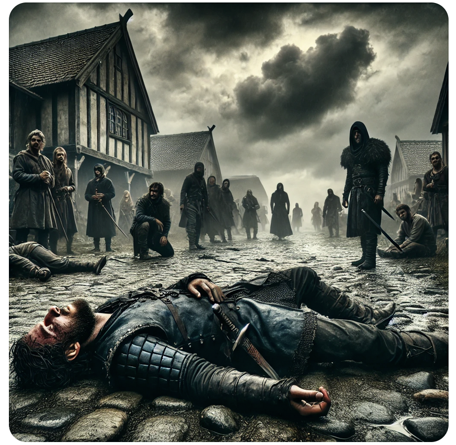

キャラクター設定のために加護を選んでください。選択は1週につき1回のみです。選択するたびに累積ターン数が増加し、勝率修正が上昇します。

あらすじ:
古の時代、平和な村に突如として現れたドラゴンが村を脅かしています。勇者として選ばれたあなたは、村を救うためドラゴンを討伐する旅に出ます。
ゲームの説明:
このゲームでは、勇者としてドラゴンを倒すまでのターン数を競います。少ないターン数でクリアすることを目指してください。運と戦略が鍵となります。

勇者は小さな村に到着しました。村人たちは、最近現れたドラゴンの話をしていました。勇者は村を守るため、ドラゴンを倒す決意を固めます。

勇者はドラゴンに立ち向かうために、鍛冶屋で新しい剣を手に入れました。鋼の剣はドラゴンに対抗するための重要な武器です。装備を強化し、村の外れにあるドラゴンの巣へ向かいます。

鍛冶屋で鋼の剣を手に入れた勇者は、装備を強化し、ドラゴンとの戦いに備えました。新たな装備は勇者の勝率修正を高め、戦闘を有利に進めることができます。
成功基準: ダイスの目 + 勝率修正 ≥ 12で成功

成功基準: ダイスの目 + 勝率修正 ≥ 10で成功
勇者
これにより、勇者の冒険はひとまず終わりを迎えました。しかし、彼の伝説は語り継がれ、次なる冒険への序章となることでしょう。
累積ターン数: 0

- プロデューサー: Nobuaki Oshiro
- サウンド: Suno3.5
- アートワーク: DALLE
- プログラミング: ChatGPT
- テストプレイ: ゲーム愛好家たち
- 特別感謝: 全てのプレイヤー
- 制作: 生成AIをフル活用して作成
